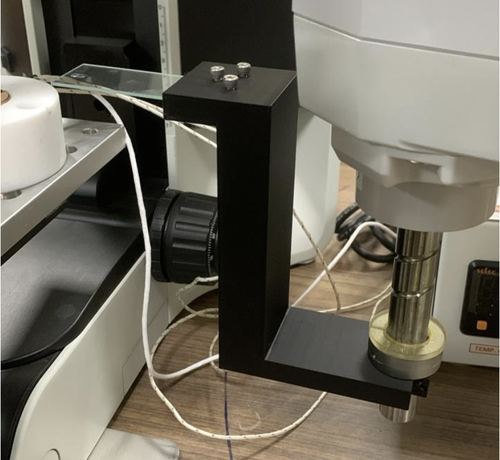
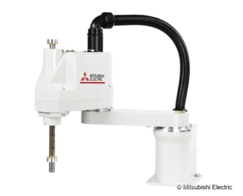
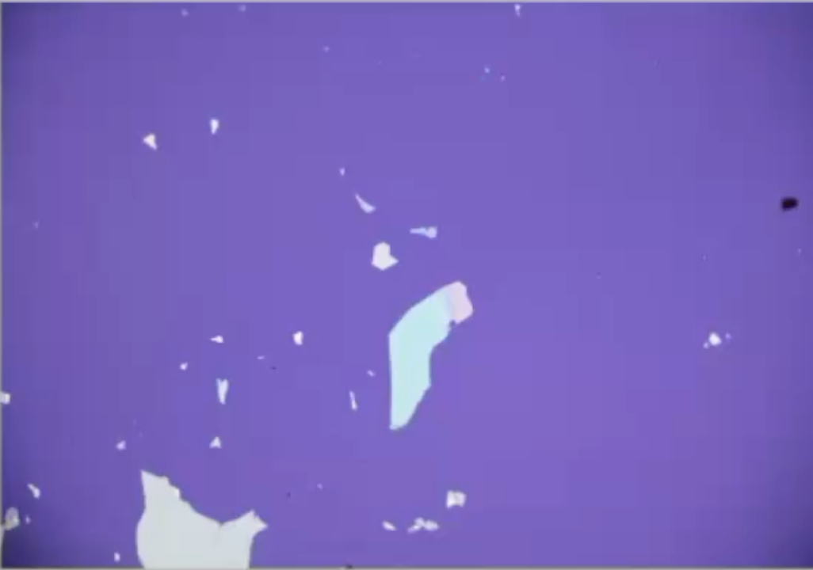
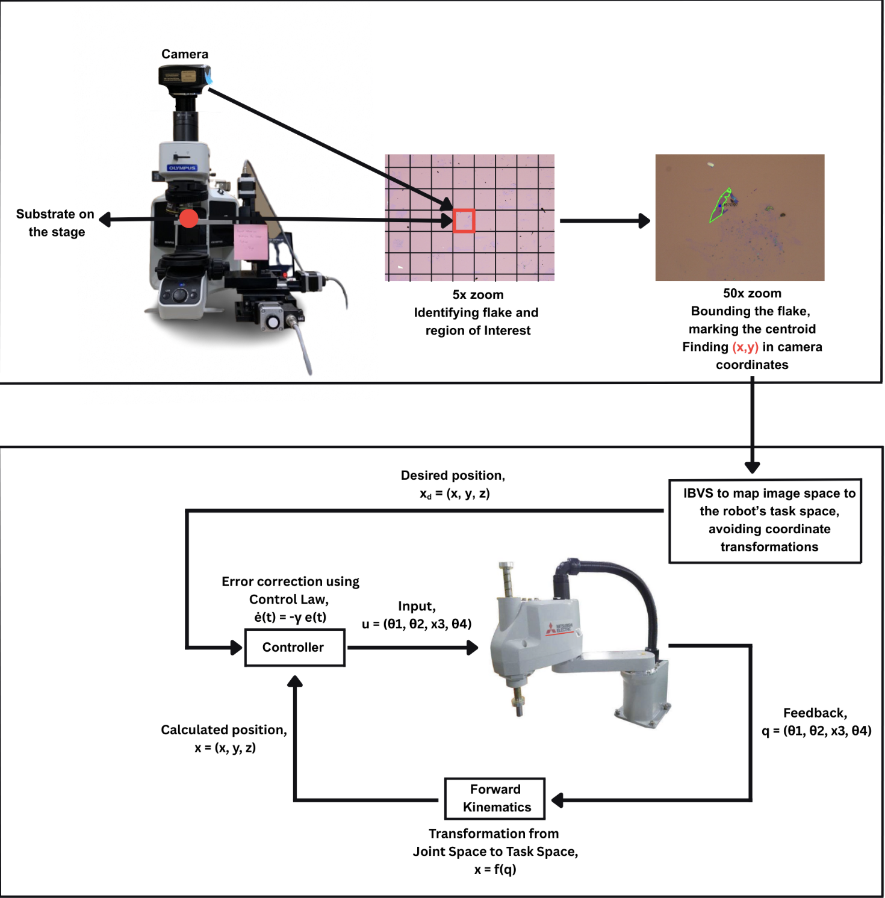

Micron-Scale Visual Servoing
- Platform Integration: Developed closed-loop controls on a Mitsubishi SCARA 3CRH manipulator at IISc Bangalore's OUSUMS Lab.
- High-Precision Assembly: Machined a custom high-precision alignment end-effector and parts holder for transferring 2D material heterostructures.
- Control Paradigm Shift: Replaced traditional open-loop commands with a dynamic closed-loop Image-Based Visual Servoing (IBVS) pipeline.
- Visual Feedback: Bypassed complex joint/task space transformations using direct camera feedback to calculate error coordinates.
- Sub-Micron Repeatability: Successfully eliminated cumulative positioning errors, achieving repeatable manipulation precision of 1–2 microns.
- Fragile Material Handling: Minimized sudden accelerations and overshoot, ensuring zero damage to delicate 2D material flakes.
- Efficiency Breakthrough: Slashed the time required for semi-automated transfer from 20 minutes down to just 2 minutes.
Outstanding sub-micron positioning accuracy achieved under closed-loop IBVS controls.
Slashed target 2D flake transfer time from 20 minutes to only 2 minutes.





Home-Built SCARA Robot
A hands-on SCARA robot prototype built to explore mechanism design, assembly, and planar robotic motion.
- Hardware Prototyping: Built a basic SCARA-style robot from scratch as a hardware prototyping project.
- Mechanical Design: Focused on mechanical layout, link design, joint placement, and actuation.
- Planar Kinematics: Explored planar robot motion through a compact physical prototype.
- Full Assembly: Designed and assembled the base, links, joints, and end-effector structure.
- Design Principles: Used the project to understand workspace, alignment, mechanical tolerances, and motion constraints.
- Foundation: Acts as an early design foundation before the later Mitsubishi SCARA research work.
Configured links and joints for precise planar movement and coordination.
Constructed physical prototype links using custom design and mechanical assembly.
Combined deep control engineering research with hands-on mechanical prototyping. Proved sub-micron stacking repeatability via IBVS while establishing first-principles kinematics and tolerance constraints through a physical SCARA build.